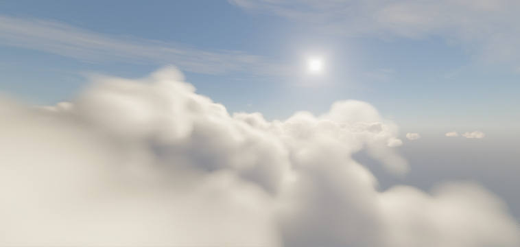
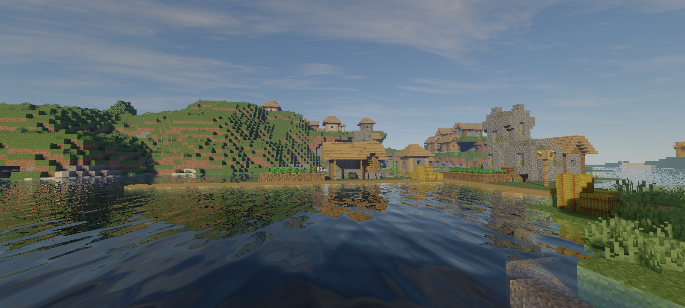
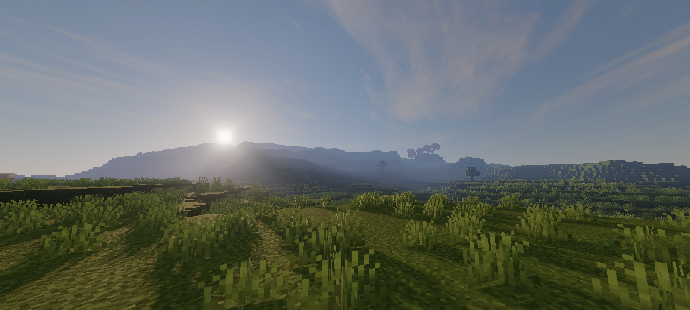
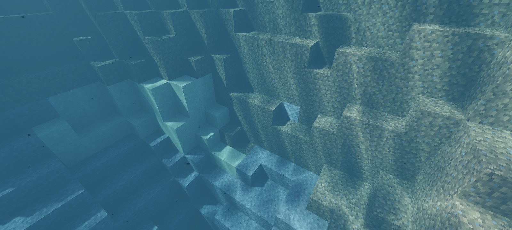
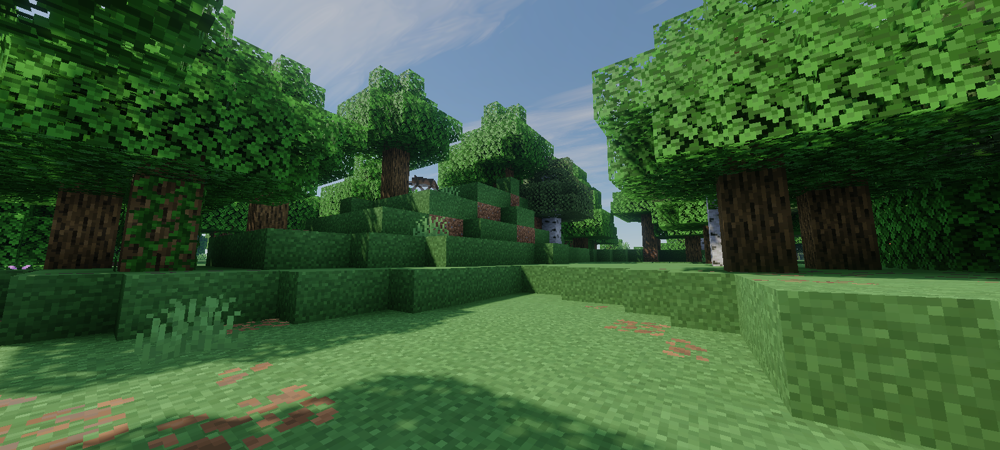
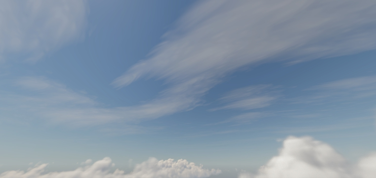
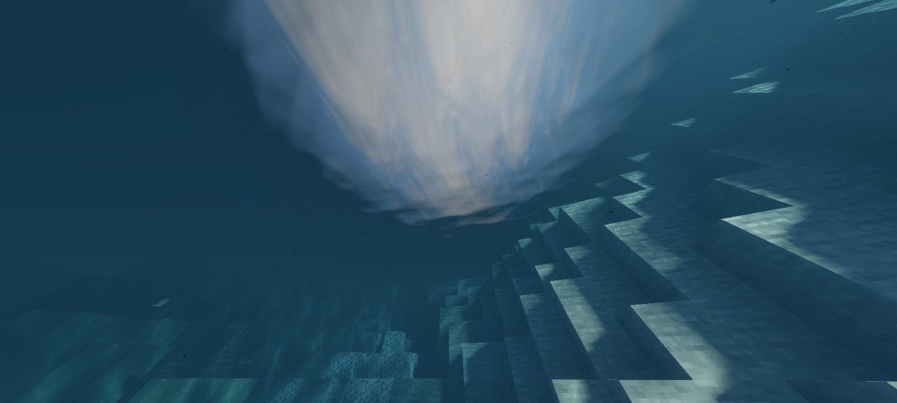
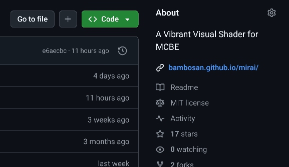

Mirai
About
A vibrant visual shader for MCBE that aims for the visuals to look realistic, that's it.
Technically, Mirai is a heavily modified vibrant visual pipeline. A total of 52 materials have been rebuilt and adjusted, where the material itself is a file used by the Render Dragon engine, containing shaders and configurations for the rendering pipeline.
Mirai is also a reboot of my old shader project that once shared the same name. The previous one focused on a different visual direction; this version is a complete reimagination. Instead of continuing the old style, now it's built around a realistic look and atmospheric feels.
Main Features







Open Source
Mirai is built out of passion and shared freely with the community under the MIT License. Whether you want to see how the shader works under the hood or contribute to making it even better, the source code is free to explore.
View Repository
Download & Install
Version 2.1.1
for MCBE: 26.10, 26.11, 26.12 26.13 release/stable (not preview!)
also please read the installation guide!
Installation Guide
There are three ways to install it and no recommendation on which is the best; choose the one you like.
Using MB Loader app
- Download the app here
- Open the app, go to Settings
- Click Import addon, select the downloaded .mcpack file
- Back to Home and click Load with Draco
- Activate the resource pack
- Restart MB Loader
Using Levi Launcher app
- Download the app here
- Download the mod here (.so file)
- Open Levi Launcher, go to Manage Mods, click Add Mod and select the mod (.so file) from step 2
- Go to Content Management, click Resource Packs, click Import Resource Pack select the downloaded .mcpack file
- Click Launch
- Activate the resource pack
- Restart Levi Launcher
Using Ambient app
- Download the app here
- Open file manager, click the downloaded .mcpack file, open with Ambient
- Open the app, click Launch Game
- Activate the resource pack
- Restart Ambient
Installation Guide
There are several ways to install it. Once you have the .mcpack file, you can extract it and do whatever you want to install it, as long as it works and you know what you're doing. We'll show you the method using BRD (BetterRenderDragon) because it's considered the easiest.
- Install BRD using this script
- Open File Explorer and double click downloaded .mcpack file (this will open Minecraft)
- When Minecraft is open, go to video settings
- Enable "In-game graphics mode switching"
- Set graphics mode to "Fancy" (if not already)
- Activate the resource pack
- Join the world and change the graphics mode to vibrant visual
Installation Guide
Work in progress...
Changelog
Version 2.1.1 (Latest)
- Added full support for Windows MCBE
- Added support for MCBE 26.10 and above
- Added screen space reflection to the water surface when the camera is in the water
- Added water scattering (not the volume)
- Added new materials
- Added support for colored floodfill/static lighting. Currently need another resource pack (vibrant visual pack) that has colored static light configurations
- Added transition fading to subsurface scattering material value, now at a distance of about 50 blocks from the player's position, all blocks that have subsurface scattering will use diffuse lambert
Changes
- Improve cirrus cloud shape
- Improve cirrus cloud lighting
- New cirrus cloud positioning, now the position is absolute to the world origin, no longer following the player's position
- Remove extra details on the edges of the volumetric cloud (a bit performance improvement)
- Improve volumetric clouds model
- Improve volumetric clouds lighting
- Improve volumetric clouds rendering
- Improve volumetric clouds shadow accuracy
- Reduce albedo brightness
- Increase contrast and exposure to post processing
- New underwater detection method
- Improve volumetric fog, now the fog disappears when the player is inside the cave
- Reduce subsurface scattering falloff
- Reduce water normal map offsets/bump
- Increase water surface wave distance smoothing
- Increase water caustics brightness
- Desaturate directional lighting color at night
- Reduce volumetric clouds brightness at night
- Some changes to atmospheric scattering, now it is warmer in the morning or afternoon and also more vibrant at dusk
- Remove celestial bodies on probe reflections because they all look ugly
- Improve nether and endworld ambient lighting
- New block lightmap lighting
- Improve undewater volumetric fog placement
- Increase sun brightness
Fix
- Fixes broken noise textures (affected to volumetric and planar clouds shape)
- Fixes volumetric clouds dithering (because of broken noise textures)
- Fixes billboard rendering
- Fixes underwater rendering
- Fixes wrong tonemapping implementatione
Known Bug
- All objects that forward rendered (e.g. glass and banner) look distracting when viewed from underwater
Version 2.0.0
- Added real-time, permeable volumetric clouds
- Added volumetric clouds shadow
- Added volumetric fog in under water
- Added transition fading to lighting when sunset to night or night to sunrise
Changes
- New 2d clouds model
- New water surface wave model
- New water caustic model
- New lighting system, now baked AO is separated from albedo and it's contribute to ambient lighting
- New celestial bodies model, now the sun is drawing from shader code and moon from Minecraft's texture
- New screen space reflection, now it's not blurry, has more vertical tracing, and remove screen edge fading
- Increase shadow brighness also reduce it's saturation
- Reduce color saturation at post processing
- Reduce mie scattering of volumetric fog
- Change aerial/atmospheric intensity of volumetric fog. Now it has normal intensity at day, noon, sunset, and night, but has more intensity at sunrise
- Reduce shadow blur filter wide, now it's same for all quality settings
Version 1.1.1
Bugs Fixed
- Black rectangle when looking at an object that produces bloom
- Invisible map
- Chaotic beam effects that occur when defeating Ender Dragon
- Raindrop particles pass through the block
- Water becomes bright when in the endworld
- Player get flashbanged when joined world
- Volumetric fog not rendered properly on some objects
Changes
- Reduce subsurface scattering falloff
- Reduce the frequency of water waves
- Increase the emissive intensity of texture material
Version 1.0.0
Initial release
FAQ
Rain contribution to lighting and atmosphere is not yet implemented. This feature is planned for future updates
Without volumetric clouds the answer is yes, if volumetric cloud is enabled then the answer is no. It targets mid to high-end devices
Yes, you just have to put Mirai above all of them
Yes
Gallery
Click on the image to enlarge